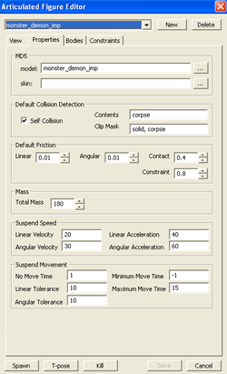
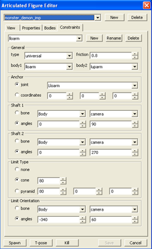

|
|
| Making DOOM 3 Mods : The AF Editor | |
|
|
 |
|
|
|
The Articulated Figure (AF) editor allows you to change various properties of the articulated figures, more commonly known as rag dolls. The 'View' Tab
The view tab deals with how your current test model shows up in
the world. The items on this tab are not saved when the AF is
saved, they are simply to aid in development.
The 'Properties' Tab

The properties tab sets some generic properties that apply to the
entire object as a whole.
The 'Bodies' Tab
 The bodies tab sets up the properties for each body in the AF. The
term 'body' here means a single moveable piece, such as an arm or a
foot. You set up the size, shape, mass, etc for each body on this tab.
The bodies tab sets up the properties for each body in the AF. The
term 'body' here means a single moveable piece, such as an arm or a
foot. You set up the size, shape, mass, etc for each body on this tab.
The 'Constraints' Tab

The constraints tab sets up the properties for joints between bodies.
For example, you can set up the elbow joint so it can't go beyond a
certain angle (and thus prevent it from folding backwards).
|
 |
|
| Copyright © 2004 id software |